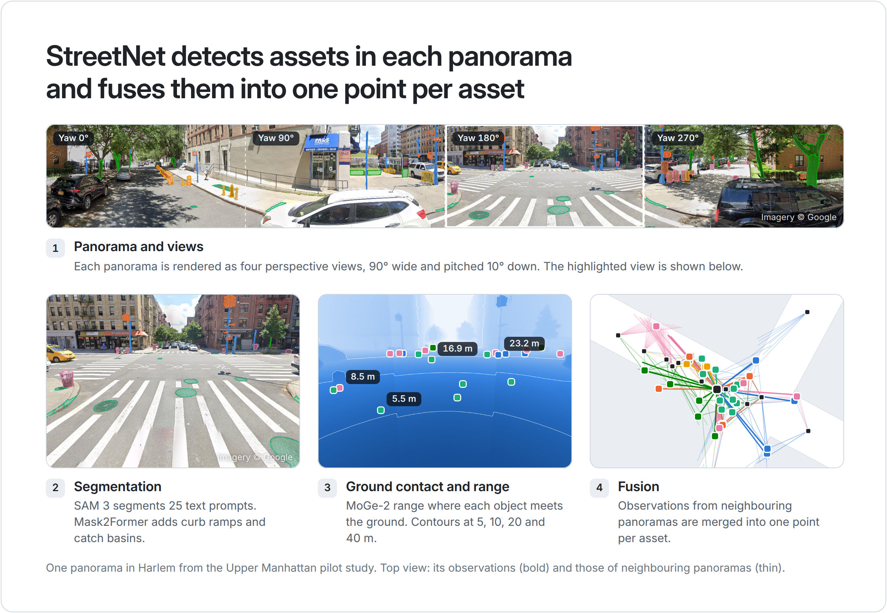

StreetNet
Open-vocabulary street asset inventories from street-level panoramas at city scale.
 Imagery © Google
Imagery © GoogleVideos
Overview and methodology recordings from the Upper Manhattan pilot study that informed the released pipeline.
Overview Trailer 1:50
Walkthrough of the mapped asset classes and interactive pilot inventory, linking mapped assets back to their source panoramas.
Methodology 6:46
Detailed breakdown of camera geometry, open-vocabulary and panoptic segmentation, monocular range benchmarks, multi-view fusion, hyperparameter search, and error analysis.
These recordings depict the Upper Manhattan pilot configuration (eight views, 34 prompts per panorama, and 18 mapped classes); the pilot web interface and road-condition layers are not part of this release. The released pipeline runs four views and 25 prompts across 22 asset classes. Imagery © Google.
Method
GPU detection runs once per panorama to produce compact instance records. CPU mapping operates solely on those records, localizing each detection in a metric coordinate frame and fusing observations across overlapping panoramas.


Perspective views
Four evenly spaced pinhole views per panorama, each with a 90° field of view, −10° pitch, and 1008 × 1008 resolution.
Segmentation
SAM 3.1 segments 34 natural-language prompts in fixed-shape batches. Mask2Former (Mapillary Vistas) segments curb ramps, ensembles catch basins, and supplies road, crosswalk, manhole, and vehicle semantics.
Self-calibrated depth
MoGe-3 (ViT-G) predicts metric 3D point maps self-calibrated per panorama against unobstructed roadway pixels without external LiDAR or ground truth.
Occlusion-aware localization
Distance-prone classes use self-calibrated MoGe-3 range; ground and surface classes intersect a leveled ground plane unless parked cars hide the base, automatically switching to vehicle-masked interior depth.
Fusion and verification
Bounded average-linkage clustering, anisotropic Cauchy refinement, zero-GIS crosswalk/manhole priors, occlusion-aware adaptive support, and zero-shot multi-distractor SigLIP 2 verification.
City-scale deployment
GPU detection writes compact Parquet records alongside lightweight crosswalk and occlusion sidecars; CPU mapping parallelizes over 1 km tiles with 60 m halos.


Classes
StreetNet maps 22 asset classes organized into eight functional groups. Classes are specified by natural-language SAM 3.1 prompts and can be customized for new vocabularies; curb ramps come from Mask2Former and catch basins ensemble both detectors.
| Class | SAM 3.1 prompts / source | Mount | Placement |
|---|---|---|---|
| Lighting and poles | |||
| Street light | street light pole | ground | range |
| Sign pole | sign pole | ground | ground |
| Traffic control | |||
| Traffic signal | traffic light, pedestrian walk signal | pole | range |
| Traffic sign | traffic sign, parking regulation sign, street name sign | pole | range |
| Bus stop sign | bus stop sign | pole | range |
| Ground surface | |||
| Manhole cover | manhole cover | surface | ground |
| Catch basin | storm drain, street drainage grate + Mask2Former-Vistas: Catch Basin | surface | ground |
| Curb ramp | Mask2Former-Vistas: Curb Cut | surface | ground |
| Safety and emergency | |||
| Fire hydrant | fire hydrant, street fire hydrant | ground | ground |
| Bollard | bollard | ground | ground |
| Barrier | construction barrier | ground | ground |
| Fire alarm boxexperimental | fire alarm box, red street fire call box | ground | ground |
| Sanitation | |||
| Trash can | trash can, public litter basket | ground | ground |
| Greenery | |||
| Street tree | tree trunk | ground | range |
| Planterexperimental | planter | ground | ground |
| Transit and mobility | |||
| Bus shelter | bus stop shelter, glass bus shelter | ground | ground |
| Bike rack | bike rack, bicycle rack | ground | range |
| Bike share dockexperimental | bike share docking station | ground | ground |
| Parking meterexperimental | parking meter, parking pay station | ground | ground |
| Amenities | |||
| Bench | bench, sidewalk bench | ground | range |
| Mailbox | mailbox | ground | ground |
| LinkNYC kiosk | tall black sidewalk digital kiosk, LinkNYC kiosk | ground | ground |
Placement: range classes are localized via self-calibrated MoGe-3 metric range along the contact ray; ground classes intersect the leveled ground plane (automatically switching to vehicle-masked interior range when parked cars occlude the base); pole-mounted classes inherit their supporting pole's geometry.
New York City
The citywide deployment covers 1,170,687 panoramas across all five boroughs, scheduled coarse-to-fine via a spatial quadtree so every completed level maintains uniform citywide coverage.

Version v0.2 (plan levels up to 20): 4,265,125 assets across 22 classes from 401,419 panoramas captured between 2007 and 2026. Quadtree plan levels up to 20 (one panorama per ~29 m cell) across all five boroughs, with minimum view support capped at 1.
The evaluation region is the union of 15 m disks around the 5,996 mapped panoramas located within 20 m of the Upper Manhattan pilot footprint and at least 30 m from the development split used to tune fusion parameters. Across 29,806 NYC Open Data reference assets in this region, the map achieves 0.255 precision, 0.345 recall, and 0.293 F1 at a 3 m matching radius (table).
The dataset distributes the fused asset map, municipal reference points, and evaluation region geometry; no imagery or panorama identifiers are included.
Download the map
hf download mehmetkeremturkcan/streetnet-nyc --repo-type dataset --local-dir streetnet-nycRead it with pandas
import pandas as pd
assets = pd.read_parquet("hf://datasets/mehmetkeremturkcan/streetnet-nyc/data/assets.parquet")
hydrants = assets[(assets["class"] == "fire_hydrant") & (assets["support"] >= 2)]Accuracy
Same-class predictions and municipal reference points are matched one-to-one within a 3 m radius inside a disjoint test region of the pilot footprint, excluding the development split used for hyperparameter tuning.
| Class | Ground truth | Predicted | Precision | Recall | F1 | Median error (m) |
|---|---|---|---|---|---|---|
| Street tree | 9,768 | 12,432 | 0.500 | 0.636 | 0.560 | 2.17 |
| Traffic sign | 6,322 | 5,779 | 0.149 | 0.136 | 0.142 | 2.57 |
| Sign pole | 3,390 | 3,407 | 0.044 | 0.044 | 0.044 | 3.23 |
| Curb ramp | 2,962 | 2,254 | 0.633 | 0.479 | 0.546 | 1.41 |
| Street light | 2,409 | 7,464 | 0.084 | 0.261 | 0.127 | 1.84 |
| Catch basin | 1,582 | 1,147 | 0.305 | 0.221 | 0.256 | 1.82 |
| Fire hydrant | 1,454 | 1,106 | 0.375 | 0.284 | 0.323 | 2.29 |
| Bike rack | 817 | 691 | 0.041 | 0.034 | 0.037 | 2.10 |
| Trash can | 402 | 3,839 | 0.032 | 0.308 | 0.058 | 2.51 |
| Fire alarm box | 197 | 25 | 0.000 | 0.000 | 0.000 | n/a |
| Parking meter | 187 | 131 | 0.115 | 0.080 | 0.094 | 1.68 |
| LinkNYC kiosk | 109 | 4 | 0.000 | 0.000 | 0.000 | 4.09 |
| Bus shelter | 105 | 75 | 0.338 | 0.248 | 0.286 | 2.57 |
| Bench | 102 | 1,954 | 0.027 | 0.520 | 0.052 | 1.83 |
| All classes | 29,806 | 40,308 | 0.255 | 0.345 | 0.293 |
Reference layers come from NYC Open Data. Several layers are partial or dated (work-order sign records, the 2015 tree census, and the 2019 ramp survey), so valid detections missing from a reference layer count as false positives. Median positional error is computed over pairs matched within 5 m. See Evaluation for full protocol details and source datasets.
Throughput
Measured during the citywide New York City run on four NVIDIA RTX PRO 6000 Blackwell Max-Q GPUs (one detection worker per GPU).
| Stage (per panorama) | Model |
|---|---|
| Concept segmentation (4 views × 34 prompts, lazy mask head) | SAM 3.1 |
| Panoptic and scene semantics (4 views at 1024 px) | Mask2Former Swin-L |
| Self-calibrated monocular metric 3D geometry (4 views) | MoGe-3 (ViT-G) |
| Per-candidate zero-shot verification (tight + wide crops) | SigLIP 2 (SO400M) |
- Hardware
- 4 × NVIDIA RTX PRO 6000 (96 GB)
- Detection sidecars
- Parquet + crosswalk points + 1 KiB occlusion mask
- Details
- Optimizations and reproducibility
Quickstart
Detection and verification require Linux, an NVIDIA GPU, and Python 3.10 to 3.12. Mapping and evaluation run on CPU with Python 3.10+.
1Install
git clone -b v2 https://github.com/mkturkcan/streetnet.git && cd streetnet
pip install -e ".[detect]" # CPU-only mapping and evaluation: pip install -e .
hf auth login # SAM 3.1 is gated; accept its license at huggingface.co/facebook/sam3.1 first2Detect (one process per GPU)
streetnet detect --index panos.parquet --images panoramas/ --out runs/city --gpus 0,1,2,3 --compile
streetnet status --index panos.parquet --run runs/city3Fuse and verify
streetnet map --index panos.parquet --run runs/city --name city --defer-verify
streetnet verify --index panos.parquet --images panoramas/ --run runs/city --map runs/city/map/city_assets.parquet --out runs/city/map/city_verified_assets.parquet --gpus 0,1,2,34Evaluate against municipal reference data
streetnet eval --index panos.parquet --map runs/city/map/city_verified_assets.parquet --gt reference.parquet --gt-datum nad83Inputs and installation notes
- The panorama index contains one row per panorama (
pano_id,lat,lon,heading, and optionalpitch,roll, and camera heighth). Reference tables specifygt_key,lon, andlat. See Data formats for full schemas. - Checkpoints for SAM 3.1, Mask2Former, MoGe-3, and SigLIP 2 download automatically on first use. SAM 3.1 requires NumPy < 2.0; MoGe-3 sparse refinement requires
flex_gemm. - MoGe installs
opencv-python, which requireslibGL. On headless servers or CUDA containers, substituteopencv-python-headless. - Verified with Python 3.11, PyTorch 2.12 (CUDA 13.0),
transformers5.8.1, SAM 3 commit96914d2, and MoGe commit74fbce0.
Documentation
Method
Stage-by-stage pseudocode, geometric constants, per-class fusion hyperparameters, and city-scale tiling.
Read methodData formats
Schemas for the panorama index, reference layers, run folder, detection records, and asset tables.
Read formatsEvaluation
Hungarian matching protocol, NYC Open Data reference layers, disjoint test region, and per-class results.
Read evaluationPerformance
Multi-GPU throughput benchmarks and measured fidelity impact of every inference optimization.
Read benchmarksCitation
@software{turkcan2026streetnet,
author = {Turkcan, Mehmet Kerem},
title = {{StreetNet}: Open-Vocabulary Street Asset Inventories from Panoramas at City Scale},
year = {2026},
version = {0.2.0},
url = {https://github.com/mkturkcan/streetnet}
}Acknowledgments
This research is supported by the ERC for Smart Streetscapes, funded through NSF award EEC-2133516.
License
- Code
- GNU Affero General Public License v3.0 or later
- Asset map
- CC BY-NC 4.0 (see the dataset card)
- Models
- SAM 3.1, Mask2Former, MoGe-3, and SigLIP 2 under their respective licenses
- Imagery
- Google Street View (Imagery © Google); excerpts shown in figures and videos solely to illustrate the method
- Reference data
- NYC Open Data